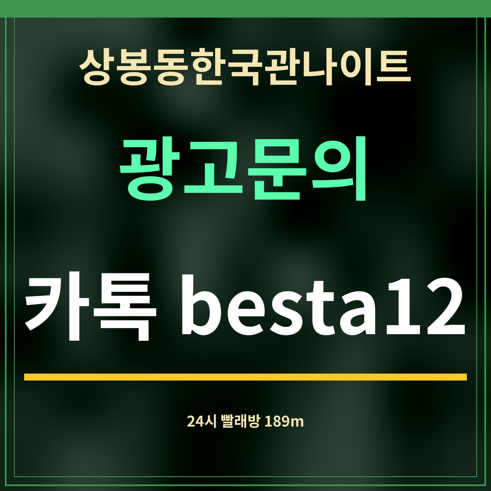

19세 미만 출입 금지
상봉동한국관나이트 새벽 동선, 24시 빨래방 189m
제휴 없는 정보 안내 · 「상봉역 24시」로 카카오맵을 찾은 결과(9월 27일)라, 실제로 밤새 여는지와는 따로 봐야 합니다.

바로 답: 상봉동한국관나이트 1km 안에서 이름에 24시가 붙은 곳은 8곳입니다. 가장 가까운 곳은 24시셀프빨래방 상봉역점 189m, 먹을 곳은 24시 진한순대국 396m입니다.
가까운 순서 8곳
| 이름 | 주소 | 분류 | 직선거리 |
|---|---|---|---|
| 24시셀프빨래방 상봉역점 | 면목로92길 29 | 셀프빨래방 | 189m |
| 24시 진한순대국 | 면목로91길 9 | 순대 | 396m |
| 24시번호키오케이열쇠 | 봉우재로25길 31 | 열쇠,도장 | 592m |
| 셀프24시빨래방워시쿱 중화점 | 동일로130길 38 | 셀프빨래방 | 652m |
| 위넌스터디카페 면목역점 | 면목로 429 | 스터디카페,스터디룸 | 754m |
| 동산 유료 24시 노상 민영 주차장 | 봉화산로 65 | 주차장 | 832m |
| 한양기사24시 | 겸재로 225 | 기사식당 | 864m |
| 카인드짐 24시 프리미엄 휘트니스 중화역점 | 동일로 802 | 헬스클럽 | 979m |
새벽에 쓸모 있는 순서
옷에 음식이나 술을 쏟았다면 189m 셀프빨래방이 가장 가깝습니다. 셀프빨래방은 사람 없이 기계로 돌아가는 곳이라 세제와 결제 방법을 현장 안내문에서 확인하면 됩니다. 속을 채울 곳이 필요하면 396m 순대국집이, 열쇠를 잃어버려 집에 못 들어가는 일이 생기면 592m 열쇠집이 이름에 24시를 걸고 있습니다.
이름에 24시가 붙어 있어도 실제로 밤새 여는지는 가게 사정에 따라 다릅니다. 카카오맵 목록에는 영업시간이 따로 나오지 않았으니, 새벽에 찾아가기 전에 지도 앱 상세 정보에서 그날 영업 여부를 확인하세요.
자주 묻는 것
가장 가까운 24시 가게는요?
24시셀프빨래방 상봉역점(면목로92길 29)으로 직선 189m입니다.
24시셀프빨래방 상봉역점(면목로92길 29)으로 직선 189m입니다.
밤새 먹을 곳이 있나요?
24시 진한순대국(면목로91길 9)이 직선 396m입니다. 실제 영업 여부는 가기 전에 확인하세요.
24시 진한순대국(면목로91길 9)이 직선 396m입니다. 실제 영업 여부는 가기 전에 확인하세요.
정말 24시간 여나요?
이름에 24시가 붙은 곳을 모은 것이라, 실제 영업시간은 곳마다 확인해야 합니다.
이름에 24시가 붙은 곳을 모은 것이라, 실제 영업시간은 곳마다 확인해야 합니다.
한 줄 정리: 상봉동한국관나이트에서 새벽에 찾을 만한 곳 — 189m 셀프빨래방, 396m 순대국집입니다.
해장할 곳을 더 보려면 해장국집 8곳을 보세요.